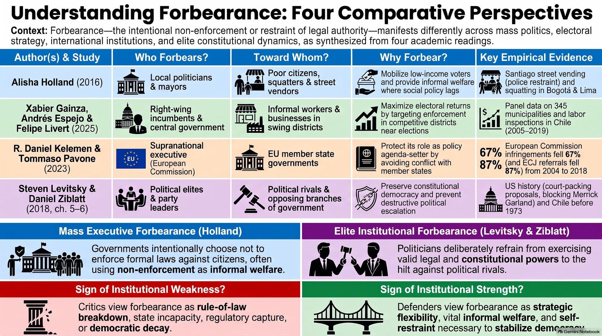
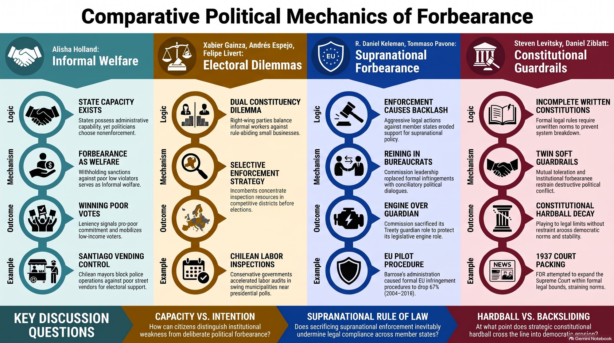

The Classroom · Weak Institutions · Class 10 · 26 Nov 2026
Forbearance
Sometimes the law goes unenforced because the state chooses not to enforce it. Holland shows Latin American politicians tolerating street vending and squatting to win the votes of the poor, Gainza, Espejo and Livert show Chile's right using labour inspections selectively, Kelemen and Pavone show the European Commission backing off as guardian of the Treaties, and Levitsky and Ziblatt treat restraint in using legal power as one of democracy's unwritten guardrails.
1 At a glance 30 seconds
Key questions
- When the law goes unenforced, is the state unable or unwilling?
- Who gains from forbearance, and why would politicians choose it?
- Can enforcement itself be used selectively for electoral gain?
- Is restraint in using legal powers a strength of democracy or a source of weak institutions?
Key concepts
Forbearance
The intentional and revocable nonenforcement of law. — Holland (2016)
Capacity, intention, revocability
Holland's three conditions: the state could plausibly enforce, politicians choose not to, and enforcement can resume (unlike an amnesty). — Holland (2016)
Welfarist forbearance
Tolerating violations by the poor as a class (street vending, squatting) as informal welfare that wins votes where social policy is thin. — Holland (2016)
Selective enforcement
Concentrating enforcement where it pays electorally: the right targets labour inspections at competitive districts and steps them up before presidential elections. — Gainza, Espejo & Livert (2025)
Supranational forbearance
Deliberate underenforcement by an international enforcer, here the European Commission as guardian of the Treaties. — Kelemen & Pavone (2023)
Institutional forbearance
Politicians' restraint in using legal prerogatives to the hilt: avoiding acts that respect the letter of the law but violate its spirit. — Levitsky & Ziblatt (2018)
Constitutional hardball
Playing by the rules while pushing their bounds to defeat rivals for good; the opposite of institutional forbearance. — Tushnet, via Levitsky & Ziblatt (2018)
Tap a concept for its definition.
What you get out of it
- Non-enforcement is not always weakness: with capacity in place, it can be a political choice that can be reversed.
- Forbearance is distributive politics: it gives the poor informal benefits and gives politicians votes.
- The same logic scales up: the European Commission traded enforcement for governments' support for its policy agenda.
- Holland's forbearance (toward citizens who break the law) and Levitsky and Ziblatt's (elite restraint in using legal power) share a word, not a concept: keep them apart.
Cases and evidence
- Street vending in Santiago; squatting in Bogotá and Lima Holland (2016)
Original data on police operations: poor-district mayors in Santiago keep a strong police force from acting against vendors; in Bogotá and Lima, enforcement against squatters stops when politicians intervene. - Labour inspections in Chile Gainza, Espejo & Livert (2025)
Panel data for all 345 Chilean municipalities, 2005–19, on Labor Directorate inspections, with fixed-effects and event-study estimates: the left does not forbear; the right concentrates inspections in competitive districts and speeds them up as presidential elections approach. - The European Commission after 2004 Kelemen & Pavone (2023)
From 2004 to 2018 infringements opened fell 67% and referrals to the Court of Justice 87%. Under Barroso, political leadership reined in enforcement staff and moved to dialogue (EU Pilot, 2007); the Juncker Commission found a rollback hard. Based on about two dozen elite interviews. - US and Chilean democracy Levitsky & Ziblatt (2018)
Chile's culture of compromise before the 1973 coup; Roosevelt's 1937 court-packing plan; the Senate refusing to consider Merrick Garland in 2016.
The readings
| Alisha C. Holland (2016) | Forbearance · American Political Science Review 110(2): 232–246 Politicians often choose not to enforce laws the poor break, to win votes where welfare states fall short. |
| Xabier Gainza, Andrés Espejo & Felipe Livert (2025) | The Right and the Politics of Labor Informality Enforcement · Latin American Politics and Society 67: 60–77 In Chile, the right enforces labour rules selectively for electoral gain, while the left does not forbear. |
| R. Daniel Kelemen & Tommaso Pavone (2023) | Where Have the Guardians Gone? Law Enforcement and the Politics of Supranational Forbearance in the European Union · World Politics 75(4): 779–825 The Commission sacrificed its role as guardian of the Treaties to protect its role as engine of integration. |
| Steven Levitsky & Daniel Ziblatt (2018) | How Democracies Die, ch. 5 'The Guardrails of Democracy' and ch. 6 'The Unwritten Rules of American Politics' · Crown Mutual toleration and institutional forbearance are the unwritten guardrails that keep constitutional powers from being used to the hilt. |
Where this fits in the course
Tuesday's class looked at unwritten rules that fill the gaps left by weak formal ones. Today the gap is chosen: the state could enforce the law but decides not to. It builds on non-compliance (19 Nov) and Amengual and Dargent's social determinants of enforcement (12 Nov), and sets up institutional ambition (1 Dec) and stability and fragility (3 Dec).
- 1Recognizing Institutions
- 2The Strength of Institutions
- 3Institutional Weakness and Democracy
- 4Institutional Weakness and Development
- 5State Capacity
- 6Society's Role in Building State Capacity
- 7Delegation, Discretion, Ambiguity and Agency
- 8Non-Compliance
- 9Informal Institutions
- 10Forbearance
- 11Institutional Ambition
- 12Institutional Stability and Fragility
- 13Exogenous Institutional Strengthening
- 14Endogenous Institutional Strengthening
- 15In-class exam
2 Look


Note: Typos: 'roplaced', 'inftingements', 'Treety', 'Barrose', 'forbearanee', 'aoross', 'secrificing'. Its EU example puts the 67% drop in infringements on Barroso alone; Kelemen and Pavone's figure covers 2004–2018, which also includes the Juncker Commission.
3 Test your understanding
4 quick questions, then 2 to answer in your own words. Nothing is saved or sent.
Which is NOT one of Holland's three conditions for forbearance?
An amnesty surrenders the right to enforce; forbearance keeps it, which is what makes it revocable.
What do Gainza, Espejo and Livert find about labour inspections in Chile?
The right faces an electoral dilemma between informal-sector supporters and businesses facing unfair competition.
Why, according to Kelemen and Pavone, did the European Commission cut infringements after 2004?
The Commission traded its guardian role for its engine-of-integration role.
In Levitsky and Ziblatt, institutional forbearance means…
Accepting rivals as legitimate is mutual toleration, the other guardrail.
How do Holland's and Levitsky and Ziblatt's uses of 'forbearance' differ, and is there a common thread?
Holland's forbearance is the state choosing not to sanction citizens who break the law, usually the poor, for electoral gain. Levitsky and Ziblatt's is elites choosing not to use legal powers to the hilt against rivals. The common thread is discretion: in both, actors with the power to act hold back. But Holland's version can weaken the rule of law, while Levitsky and Ziblatt's protects democracy.
Using Kelemen and Pavone, explain why forbearance can be a sign of strategy rather than weakness.
The Commission had the capacity and legal powers to launch infringements but chose dialogue instead, because enforcement was costing it governments' support for its legislative agenda. Lower enforcement reflected a political trade-off, not a lack of capacity, which fits Holland's distinction between unable and unwilling.
Podcasts and infographics are generated with Google NotebookLM from the course readings; the brief and quiz are drafted with Claude from the readings and syllabus. I curate what goes up, but AI-generated material can contain mistakes. Use these pages alongside the readings and seminars, and check anything important against the original texts.